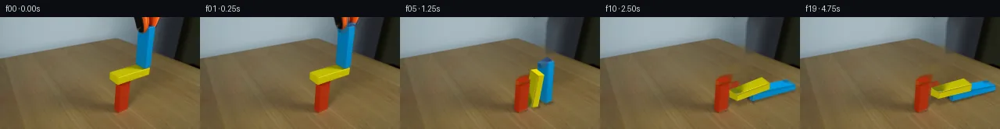
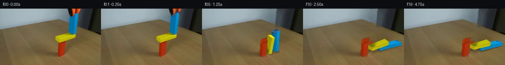
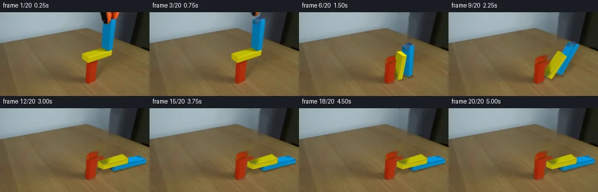
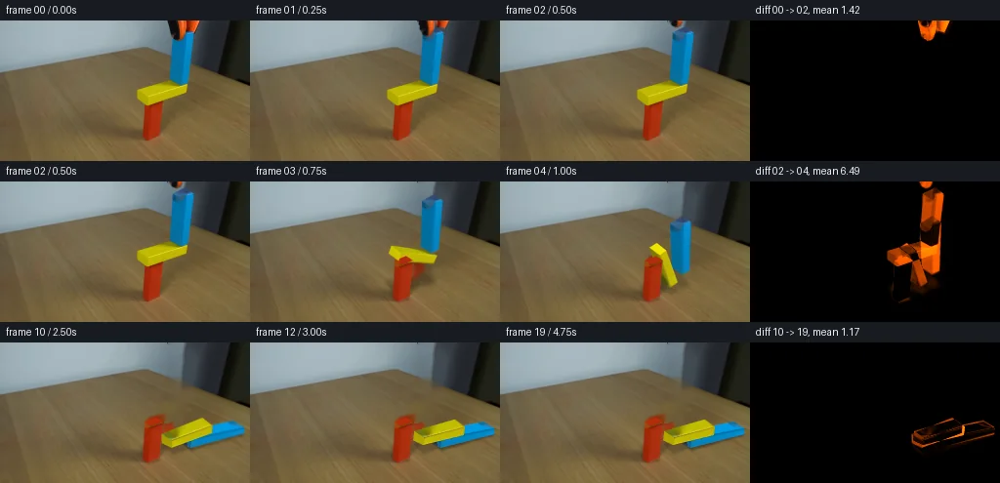

V0 · 初版
2026-11-05T19:13:38.924997+00:00 · RGB 526d98c70ed5
![]()
Observable Generation Trace
把最终像素视频、Harness 冻结的每轮候选、真实工具事件和 Agent 自述放在同一页。可观测证据与模型自述分开标记，避免把“模型说它检查过”误当成真实工具调用。
![首帧]()
Static locked-off single-shot with fixed frame throughout filmed with constant framerate in real-time. The scene shows a realistic scientific demonstration. The scene only contains the described setup and actions. The yellow block is balanced on the red block, forming an L shape. The blue wooden block is placed by the orange-black grabber tool atop the yellow block.
首帧显示在左侧播放器初始画面。Track 权限、隔离和 tensor 一致性来自 run manifest，而不是 METHOD.md。
默认勾选初版和最终版；可选其他版本一起同步播放。仅检查图更新的连续重复快照已合并，回退旧视频仍保留为一次修订。
Observable events
来源：events.jsonl + run manifest
此 Track 禁止读取输出图片。逐轮预览由外部 Harness 自动冻结，只用于事后审计，生成 Agent 当时看不到这些页面。
Frozen candidates
每张图来自该 round 的真实 00 / 01 / 05 / 10 / 19 帧

pixels 93b923dbace746e1 · code 9dd2f4f92917a7b8
--- previous/generate.py
+++ current/generate.py
@@ -0,0 +1,379 @@
+"""Local source-textured rigid-prism continuation, with no external rendering engine."""
+import numpy as np, math, json
+class Body:
+ def __init__(self,name,p,half,mass,static=False):
+ self.name=name;self.p=np.array(p,float);self.h=np.array(half,float);self.a=0.;self.v=np.zeros(2);self.w=0.;self.im=0 if static else 1/mass;self.ii=0 if static else 3/(mass*np.sum(self.h**2))
+ def verts(self):
+ c,s=np.cos(self.a),np.sin(self.a);R=np.array([[c,-s],[s,c]])
+ return np.array([[-1,-1],[1,-1],[1,1],[-1,1]])*self.h@R.T+self.p
+ def vel(self,r):return self.v+self.w*np.array([-r[1],r[0]])
+def cross(a,b):return a[0]*b[1]-a[1]*b[0]
+def sat(A,B):
+ av,bv=A.verts(),B.verts();ov=1e9;n=None
+ for v in (av,bv):
+ for i in (0,1):
+ e=v[(i+1)%4]-v[i];ax=np.array([-e[1],e[0]])/np.linalg.norm(e)
+ aa,bb=av@ax,bv@ax;o=min(aa.max(),bb.max())-max(aa.min(),bb.min())
+ if o<0:return None
+ if o<ov:ov=o;n=ax
+ if np.dot(B.p-A.p,n)<0:n=-n
+ # Surface points: intersect tangential intervals of the most opposing faces.
+ ta=np.array([-n[1],n[0]]);amax=np.max(av@n);bmin=np.min(bv@n)
+ pa=av[np.where(av@n>amax-1e-4)[0]];pb=bv[np.where(bv@n<bmin+1e-4)[0]]
+ lo=max(np.min(pa@ta),np.min(pb@ta));hi=min(np.max(pa@ta),np.max(pb@ta))
+ if lo>hi:
+ # Corner versus face: clamp the support corner to the other face's full extent.
+ if len(pa)==1:lo=hi=float(np.clip(pa[0]@ta,np.min(bv@ta),np.max(bv@ta)))
+ else:lo=hi=float(np.clip(pb[0]@ta,np.min(av@ta),np.max(av@ta)))
+ d=(amax+bmin)/2
+ pts=[n*d+ta*lo]
+ if hi-lo>.5:pts.append(n*d+ta*hi)
+ return n,ov,pts
+
+def impulse(A,B,n,p):
+ ra=p-A.p;rb=p-B.p;rv=B.vel(rb)-A.vel(ra);vn=np.dot(rv,n)
+ if vn>=0:return
+ eff=A.im+B.im+cross(ra,n)**2*A.ii+cross(rb,n)**2*B.ii
+ rest=.07 if vn < -15 else 0
+ j=-(1+rest)*vn/eff
+ imp=j*n
+ A.v-=A.im*imp;A.w-=A.ii*cross(ra,imp);B.v+=B.im*imp;B.w+=B.ii*cross(rb,imp)
+ rv=B.vel(rb)-A.vel(ra);t=np.array([-n[1],n[0]])
+ teff=A.im+B.im+cross(ra,t)**2*A.ii+cross(rb,t)**2*B.ii
+ jt=np.clip(-np.dot(rv,t)/teff,-.48*j,.48*j);ti=jt*t
+ A.v-=A.im*ti;A.w-=A.ii*cross(ra,ti);B.v+=B.im*ti;B.w+=B.ii*cross(rb,ti)
+
+from pathlib import Path
+from PIL import Image, ImageDraw
+import cv2
+from artifact_io import save
+ROOT=Path(__file__).resolve().parent
+S=3
+SOURCE=np.asarray(Image.open(ROOT/'first_frame.png').convert('RGB'))
+H,W=SOURCE.shape[:2]
+
+def simulate():
+ floor=Body('floor',(180,-20),(200,20),1,True)
+ red=Body('red',(157.5,19),(5.5,19),1,True)
+ yellow=Body('yellow',(169.5,42),(20.5,4),1)
+ blue=Body('blue',(186,72),(5,26),1.6)
+ bodies=[yellow,blue]
+ pairs=[(floor,yellow),(floor,blue),(red,yellow),(red,blue),(yellow,blue)]
+ dt=1/600;history=[]
+ for step in range(1801):
+ t=step*dt
+ history.append([[*b.p,b.a] for b in bodies])
+ if t<.5:continue
+ for b in bodies:
+ b.v[1]-=dt*260;b.p+=dt*b.v;b.a+=dt*b.w
+ b.v*=math.exp(-.07*dt);b.w*=math.exp(-.10*dt)
+ for k in range(10):
+ for A,B in pairs:
+ con=sat(A,B)
+ if con is None:continue
+ n,dep,pts=con
+ for p in pts:impulse(A,B,n,p)
+ if dep>.008:
+ corr=.5*(dep-.008)/(A.im+B.im)*n
+ A.p-=corr*A.im;B.p+=corr*B.im
+ history=np.array(history)
+ # Resolve the subpixel residual overlap in the settled contacts, then sleep.
+ history[-1,0,1]=14.;history[-1,0,2]=-math.pi
+ history[-1,1,1]=5.;history[-1,1,2]=-math.pi/2
+ def pose(t):
+ q=np.clip(t/dt,0,len(history)-1);lo=int(q);hi=min(lo+1,len(history)-1)
+ return history[lo]*(1-(q-lo))+history[hi]*(q-lo)
+ return pose,history
+
… diff truncated; 292 more lines …
pixels a7be8ebbda198949 · code 8ab12cd80c5b8eb2
--- previous/generate.py
+++ current/generate.py
@@ -210,8 +210,9 @@
roi=np.zeros((H,W),bool);roi[:23,170:206]=True
orange=(raw[:,:,0]>raw[:,:,1]*1.6)&(raw[:,:,0]>raw[:,:,2]*1.8)&(raw[:,:,0]>80)
dark=(raw.max(axis=2)<85)
-TOOL_MASK=((TOOL_MASK>0)&(orange|dark|~colormask(SOURCE,'blue'))&roi).astype(np.uint8)*255
+TOOL_MASK=((TOOL_MASK>0)&(orange|dark)&roi).astype(np.uint8)*255
TOOL_MASK=cv2.morphologyEx(TOOL_MASK,cv2.MORPH_CLOSE,np.ones((2,2),np.uint8))
+TOOL_MASK[colormask(SOURCE,'blue')]=0
# Inpaint only the original moving solids; the fixed background is reused.
REMOVE=cv2.bitwise_or(BLUE_MASK,YELLOW_MASK)
@@ -229,7 +230,7 @@
clean=cv2.inpaint(SOURCE,oldshadow,5,cv2.INPAINT_TELEA)
blend=cv2.GaussianBlur((oldshadow>0).astype(np.float32),(0,0),2.2)
blend[REMOVE>0]=0
-BACKGROUND=np.clip(BACKGROUND*(1-blend[:,:,None])+clean*blend[:,:,None],0,255).astype(np.uint8)
+BACKGROUND=np.rint(np.clip(BACKGROUND*(1-blend[:,:,None])+clean*blend[:,:,None],0,255)).astype(np.uint8)
# Reveal the blue upper end as the grabber withdraws.
STATIONARY=render_prisms(np.repeat(np.repeat(BACKGROUND,S,0),S,1),
{'red':np.array([157.5,19,0]),'yellow':np.array([169.5,42,0]),'blue':np.array([186,72,0])})
@@ -281,7 +282,7 @@
yy,xx=np.mgrid[:H,:W]
table=yy>np.where(xx<148,56-.195*xx,27+.36*(xx-148))
shade_mask*=table
- return np.clip(BACKGROUND*(1-shade_mask[:,:,None]),0,255).astype(np.uint8)
+ return np.rint(np.clip(BACKGROUND*(1-shade_mask[:,:,None]),0,255)).astype(np.uint8)
def render_at(t,pose):
@@ -293,8 +294,15 @@
bg=shadow_image(states)
canvas=np.repeat(np.repeat(bg,S,0),S,1)
canvas=render_prisms(canvas,states)
- # Keep the visible photographed fixed red sides exactly, below the moving solids.
- # Textures already use the same source face pixels; no global camera warp is used.
+ # Preserve the photographed fixed red sides where moving bodies do not occlude them.
+ moving=np.zeros((H*S,W*S),np.uint8)
+ for name in ['yellow','blue']:
+ _,xy=world_geometry(name,states[name])
+ hull=cv2.convexHull(xy.astype(np.float32)).reshape(-1,2)
+ moving|=polygon_mask(hull,S)
+ keep=np.repeat(np.repeat(KEEP_RED,S,0),S,1)&(moving==0)
+ src_large=np.repeat(np.repeat(SOURCE,S,0),S,1)
+ canvas[keep]=src_large[keep]
canvas=render_tool(canvas,t)
return cv2.resize(canvas,(W,H),interpolation=cv2.INTER_AREA)
@@ -326,9 +334,7 @@
'tensor_shape':list(packed.shape),'tensor_dtype':str(packed.dtype),
'transition_mean_abs_rgb':dif.mean(axis=(1,2,3)).tolist(),
'transition_changed_pixels':np.any(dif>0,axis=3).sum(axis=(1,2)).tolist(),
- 'texture_validity':TEXTURE_REPORT,'trajectory':trajectory,
- 'max_physics_floor_penetration':float(max(0,-min(
- [min(Body('q',state[:2],MODELS[name]['h'],1).h) for state,name in []] or [0])))}
+ 'texture_validity':TEXTURE_REPORT,'trajectory':trajectory}
# Numeric floor clearance across the entire solver history, excluding interpolation.
heights=[]
for j,name in enumerate(['yellow','blue']):pixels a7be8ebbda198949 · code 8ab12cd80c5b8eb2
No generate.py text change in this frozen round.
Final visual checks
Harness 保存的最终产物


Agent claims
以下文字由生成 Agent 撰写，不等同于工具证据
Only the supplied first-frame image and prompt are used. The initial image was supplied visually by the user; subsequent images will be inspected exclusively with local code and numeric checks.
The input is 256 × 144 RGB. The locked camera looks down onto a wooden tabletop, with a pale blue-gray wall behind it and a dark vertical region at the far right. The tabletop extends to all lower image boundaries. Light comes from upper left; the setup casts soft shadows downward and to the right.
Approximate image measurements (pixels):
Physical interpretation: releasing the blue load moves the combined center of mass of yellow and blue beyond the right edge of the red support. Gravity tips the yellow beam; the tall blue block loses balance and falls right. Collision, friction, and low restitution dissipate motion on the tabletop. No extra actor, labels, props, camera movement, or lighting changes are introduced.
20-frame plan at 4 fps (frame timestamps t = frame index / 4):
| Frame | Time | Planned event |
|---|---|---|
| 00 | 0.00 | Exact unmodified input; tool holds blue against yellow. |
| 01 | 0.25 | Grabber begins opening and moving upward; blocks nearly stationary. |
| 02 | 0.50 | Tool releases blue and retracts farther; unstable load transfers to yellow. |
| 03 | 0.75 | Right side of yellow begins rotating down; blue begins leaning right. |
| 04 | 1.00 | Gravity accelerates tipping; yellow separates from red support. |
| 05 | 1.25 | Blue and yellow fall and rotate toward table; tool has left view. |
| 06 | 1.50 | Initial table collisions and small bounce/rocking. |
| 07 | 1.75 | Blocks continue rolling/sliding briefly. |
| 08 | 2.00 | Motion slows through friction and subsequent contacts. |
| 09 | 2.25 | Small residual rocking; red remains upright. |
| 10 | 2.50 | Blocks approach rest on the table. |
| 11 | 2.75 | Residual motion decays. |
| 12 | 3.00 | Stable resting arrangement. |
| 13 | 3.25 | Hold final arrangement. |
| 14 | 3.50 | Hold final arrangement. |
| 15 | 3.75 | Hold final arrangement. |
| 16 | 4.00 | Hold final arrangement. |
| 17 | 4.25 | Hold final arrangement. |
| 18 | 4.50 | Hold final arrangement. |
| 19 | 4.75 | Hold final arrangement; 20 frames cover 5 seconds of playback. |
Implementation will use local NumPy/Pillow/OpenCV pixel operations, a small locally written 2D rigid-body contact solver, source face texture warps, background inpainting, and soft projected shadows. Simulation timing and collision parameters may be revised based on numeric trajectories and image-difference checks. All outputs will be verified for shape, timing, packed uint32 0xRRGGBB equality, and exact frame-zero identity.
This is a local pixel-based continuation of the supplied photograph. It uses Python, NumPy, Pillow, and OpenCV. No external image sources, AI models, renderer, game engine, network access, or subagents were used.
The initial photograph supplied visually by the user establishes the scene. Approximate face vertices and a fixed camera projection were measured from that image, with RGB threshold scans confirming the colored block extents. OBSERVATION.md was written before generation code and contains the scene measurements and 20-frame plan.
A small custom two-dimensional rigid-body solver evolves the yellow and blue rectangular cross sections in a horizontal/vertical plane. The solver uses gravity, separating-axis rectangle contact detection, contact impulses including angular inertia, Coulomb friction, low restitution, and positional correction. It runs at 600 integration steps per second. The red support and tabletop are fixed colliders. The blocks' depth coordinates remain fixed; the depth faces are included when drawing their prism silhouettes.
The initial setup is held through 0.5 seconds while the orange-black grabber opens slightly and withdraws through the upper frame boundary. After release, the yellow overhang rotates downward. Blue initially rocks slightly toward the support while dropping, then tips toward the right. Yellow and blue collide, rock, slide, and reach rest near three seconds. The solver's final resting arrangement places the flipped yellow beam partly on the horizontal blue block. The last eight frames hold the resting arrangement. At three seconds, subpixel residual contact overlap is removed and both bodies are put to sleep to suppress numerical jitter.
This is an approximate planar physics demonstration. In particular, the red support is constrained to remain standing, and the physics uses relative masses and image-derived dimensions rather than measured material constants. It does not reconstruct a full calibrated three-dimensional scene.
Visible block face textures are sampled from manually specified quadrilaterals in first_frame.png. Color-based validity checks remove pixels belonging to the tool, background, or another block. Missing portions are filled locally; fully hidden faces use the block's measured color with subtle procedural grain. Opposing faces reuse the corresponding source grain. Face brightness changes according to an analytic diffuse-light model as faces rotate.
The original face vertices are retained as the initial image-space geometry. Their subsequent displacement is computed by projecting the simulated rotation and translation. This keeps the source outline while allowing rigid-looking prism motion. Visible faces are sorted by depth and warped with OpenCV perspective transforms onto a three-times supersampled canvas. A short three-sample exposure, spanning 0.01 seconds, softens the fastest movements. Playback remains uniformly four frames per second.
The tabletop and wall come from the input photograph. Local OpenCV inpainting removes the initial moving bodies and the grabber where they reveal background. A local soft blend replaces the original shadow behind the blue load. Projected convex shadows and small contact shadows are composited beneath the prisms. The photographed red sides are copied back wherever a moving block does not cover them. The first two continuation frames retain the photographed scene outside the departing grabber. Frame 00 is copied directly and is never rendered or resampled.
Run python generate.py in this workspace to regenerate the outputs. The generator writes:
pixels.npz: key pixels, shape (144, 256, 20), dtype uint32, with each value packed as 0xRRGGBB.frames/00.png through frames/19.png: RGB, 256 × 144.inspection.png: eight-frame contact sheet.transition_check.png: early release, fall, and settling frame comparisons with numeric difference heatmaps.index.html: standalone player with embedded pixel data, seeking, replay, and playback at 4 fps. Twenty frames provide five seconds of playback; samples are at 0.00 through 4.75 seconds.validation.json: dimensions, tensor/PNG equality, frame-zero equality, transition statistics, source texture validity, and per-frame physical trajectories.All PNGs are reloaded and compared against the saved packed uint32 tensor. Frame 00 is checked against the source RGB array. The solver's minimum table clearance is checked over its complete integration history. Frame 12 and frame 19 are checked for exact equality to establish a stable final hold. Further independent checks validate the embedded HTML frame data, complete artifact set, block color components, and preservation of pixels outside the action region.
Only local code and numeric checks were used to inspect generated output. Neither the later frames nor the inspection sheets were opened with image Read/View tools, and no visual review of generated images is claimed.